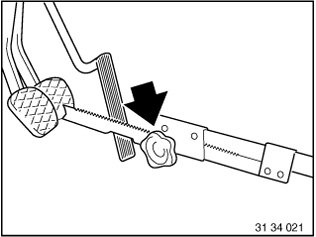
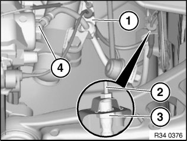
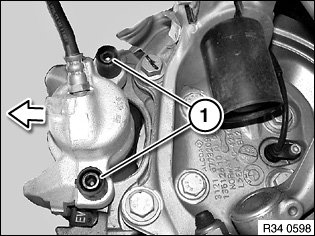
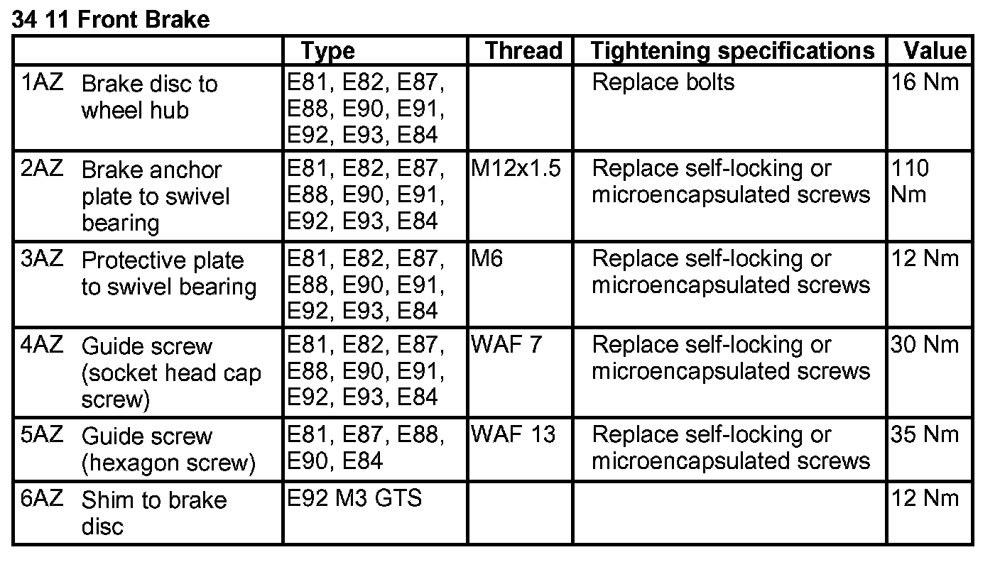

34 11 020 Removing and Installing or Replacing Front Left or Right Brake Caliper (Teves)
34 11 020 Removing and installing or replacing front left or right brake caliper (Teves)Important!
The brake pad wear sensor must be replaced once it has been removed (brake pad wear sensor loses its retention capability in the brake pad).
Necessary preliminary tasks:
^ Remove wheels.
^ Read and comply with General Information.
After completing work: Bleed braking system
Press clutch pedal down to floor and secure with pedal support.

Note:
The pedal support may only be released when the brake lines are reconnected.
This prevents brake fluid from emerging from the expansion tank and air from entering the system when the brake lines are opened.

If necessary, pull brake hose out of holder (1).
Important!
Grip brake hose at square head (3) to prevent connecting piece from turning in retaining bracket.
Disconnect brake hose from brake line (2).
Installation:
Tightening torque 34 32 1AZ.
Detach brake hose from brake caliper (4).
Installation:
Tightening torque 34 32 2AZ.
Important!
Never twist brake hose when installing it and avoid all contact with parts attached rigidly to the body.
Note:
First tighten brake hose on brake caliper.
Move wheels into straight-ahead position.
Insert brake hose in bracket and screw onto brake pipe.

Unscrew guide bolts (1).
Remove brake caliper by pulling upwards.
Installation:
Clean guide screws only; do not grease.
Check threads.
Replace all guide screws which are not in perfect condition.
Tightening torque 34 11 4AZ.
